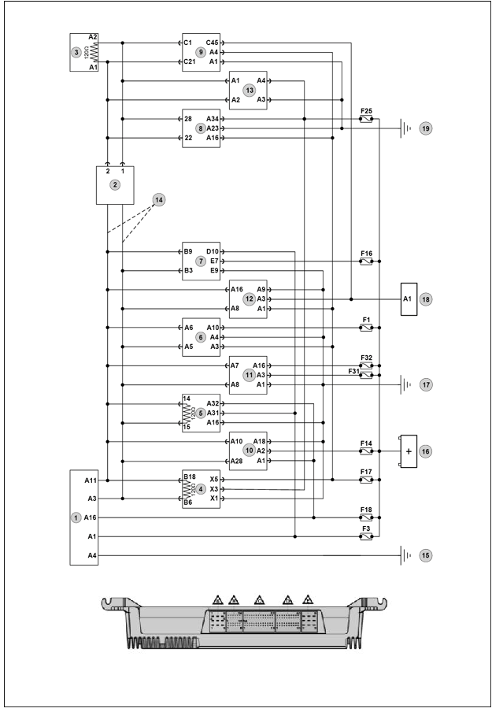
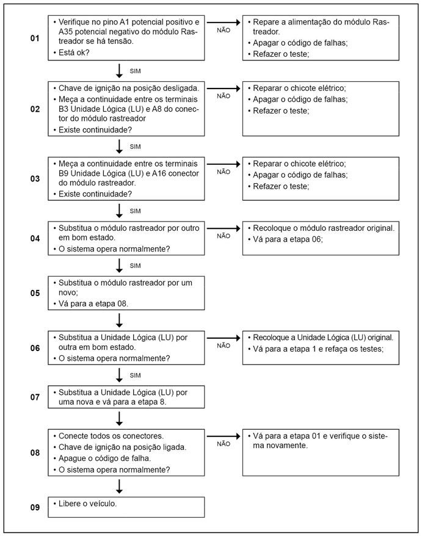

 
Legenda
- Conector de diagnósticos (OBD)
- Conector E-rack A
- Resistor da rede CAN somente para veículos com
motorização Cummins
- PTM (onde está localizado resistor de 120 Ω nos
pinos 18 e 6 do conector B)
- Cluster X1(onde está localizado resistor de 120
Ω nos pinos 14 e 15 do conetor X1)
- Volkslog
- Unidade Lógica (LU)
- Unidade dosadora (arla 32)
- ECM
- TCU
- ABS
- VTTS
- Sensor Nox
- Circuito apenas para motores Cummins
- Ponto de massa localizado dentro do E-Rack
- Potencial positivo
- Ponto de massa localizado na coluna A lado
direito
- Relê de bloqueio
- Ponto de massa localizado na parte frontal do
chassi
- Interruptor superior de embreagem
Descrição da Falha Mensagem de
identificação do módulo rastreador ausente na rede CAN.
Indicação de Falha
Luz de alerta acende constantemente com o símbolo  e ativa o alarme sonoro longo, com o veículo andando ou parado.
e ativa o alarme sonoro longo, com o veículo andando ou parado.
A luz permanece acesa enquanto o erro existir.
Estratégia de Monitoramento
A Unidade Lógica (LU) monitora a taxa de
transmissão ou interrupção da informação do módulo rastreador na rede
CAN.
Efeito da Falha
Não há efeito específico para este código.
Possíveis Falhas
FMI 9: Ausência da mensagem na rede CAN
- Verificar o chicote de
comunicação CAN do módulo rastreador.
Avisos
  Atenção! Atenção!
Leia sempre as Recomendações para Diagnósticos.
Registro de Falhas em Outros Módulos de Comando
----
Passos do Diagnóstico de Falhas
Considerar os esquemas elétricos do veículo
Verificação
| Medição
| Eliminação da Falha
|
Tomada OBD
|
Com a linha 15 desligada:
- Medir a resistência entre os pinos A11 (CAN-L) e A3 (CAN-H)
Valor nominal:
~120 Ω
|
– Verificar os cabos quanto a mau contato, corrosão ou cabos invertidos
– Verificar as conexões quanto a oxidação ou mau contato
– Em cerca de 0 Ω, curto-circuito de CAN-H para CAN-L
– Caso nenhuma falha seja verificada, substituir a Unidade Lógica (LU)
|

|